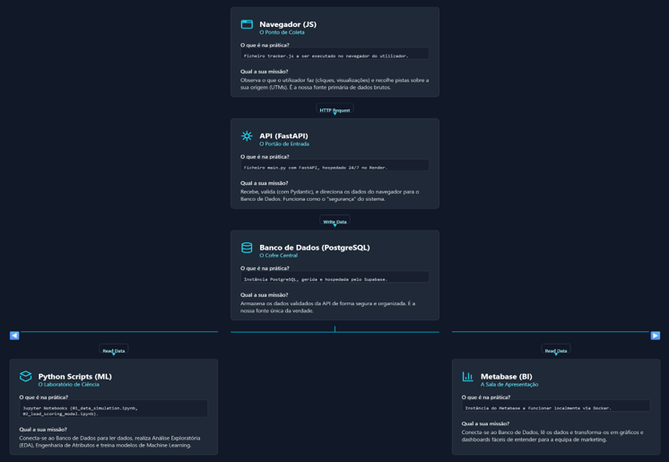

2.0 Arquitetura do sistema
2.1 Pipeline de Dados
O sistema implementa um pipeline de dados completo que transforma cliques anônimos em inteligência de negócios acionável. O fluxo operacional consiste nas seguintes etapas:
1. Coleta (Navegador): O arquivo tracker.js, configurado no site, captura eventos do usuário (por exemplo, page_view) e dados de atribuição (como UTMs). Ele gera um identificador único (visitor_id) e armazena detalhes sobre interações iniciais e finais (first touch/last touch) no localStorage do navegador.
2. Ingestão (API FastAPI): Os dados coletados são enviados por meio de requisições POST para uma API construída em FastAPI (main.py) e hospedada no Render.
3. Validação: A API utiliza os modelos do Pydantic para validar rigorosamente o payload dos eventos, garantindo aderência ao esquema definido e rejeitando dados incompletos ou malformados.
4. Armazenamento (PostgreSQL): Após validados, os dados são inseridos de forma segura no banco de dados PostgreSQL, gerenciado via Supabase.
5. Análise e Modelagem (Python/Jupyter): Scripts em Python e notebooks Jupyter conectam-se ao banco de dados e realizam tarefas de engenharia de atributos (feature engineering) para treinar os modelos de aprendizado de máquina (Lead Scoring e LTV).
6. Automação (Cron Job): Um script chamado score_updater.py é executado diariamente no Render. Ele carrega o modelo treinado, verifica novos usuários, calcula suas pontuações e atualiza os elementos necessários no banco de dados.
7. Visualização (Metabase): O Metabase, rodando localmente por meio de contêiner Docker, conecta-se ao banco de dados (em modo de leitura somente) para gerar dashboards e relatórios interativos.
2.2 Tecnologias Utilizadas
A tabela a seguir apresenta as tecnologias-chave do sistema e suas respectivas justificativas: | Categoria | Tecnologia | Justificativa | |-----------------------|-------------------------|----------------------------------------------------------------------------------| | Coleta | JavaScript (custom) | Script tracker.js criado para captura de eventos no front-end e atribuição de origem. | | Ingestão (API) | Python / FastAPI | API simultânea usada para validação dos dados (com Pydantic) e inserção segura no banco. | | Armazenamento | PostgreSQL (Supabase) | Banco de dados relacional gerenciado na nuvem, servindo como repositório central dos dados. | | Análise/Modelagem| Python / Jupyter | Ferramentas utilizadas para realizar engenharia de atributos e treinar os modelos. | | Automação | Cron Job (Render) | Executa diariamente o script score_updater.py para atualizar pontuações no banco. | | Visualização | Metabase (via Docker) | Ferramenta de BI open-source, utilizada para criar dashboards e análises visuais. |
2.3 Diagrama do Sistema
O diagrama abaixo ilustra o fluxo completo de dados dentro do sistema InsightOS, desde a coleta inicial até a visualização final. Figura 1 - Diagrama de Fluxo de Dados do Sistema InsightOS 